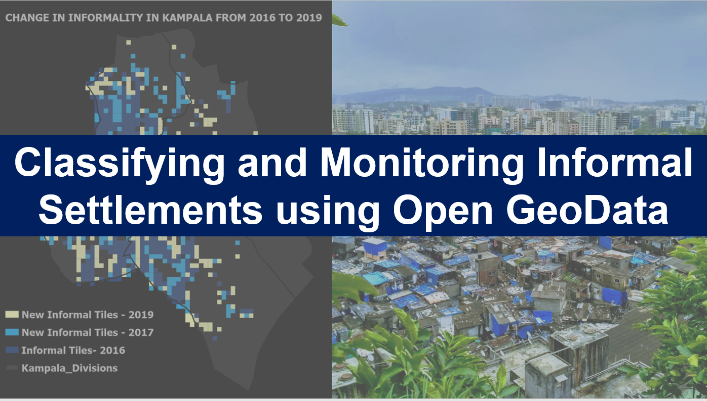

I am a Geospatial developer, engineer, cartographer, and data scientist. I have horned and applied my skills to contribute to open source work, Transportation projects, Non-Government Organizations and a Water Utility Company. I specialize in Remote Sensing Geospatial Data Mining, Geostatistics, Machine Learning, GIS Analytics, Geospatial Programming and Development. I am strong believer in the power of digital, data-driven technologies to provide solutions to challenges faced in our communities. I am interested in GIS software and products that explore social-ecological challenges, humanitarian assistance, climate change, urban design, food security, and sustainable development.
Please take some time to explore the rest of the website exhibiting some of the works I am proud of. If you would like to know more about a particular project or use any of the visualizations or maps, please contact me to obtain permission using the Form below. If you're curious about some of the code behind my visualizations, head to my Github page.
